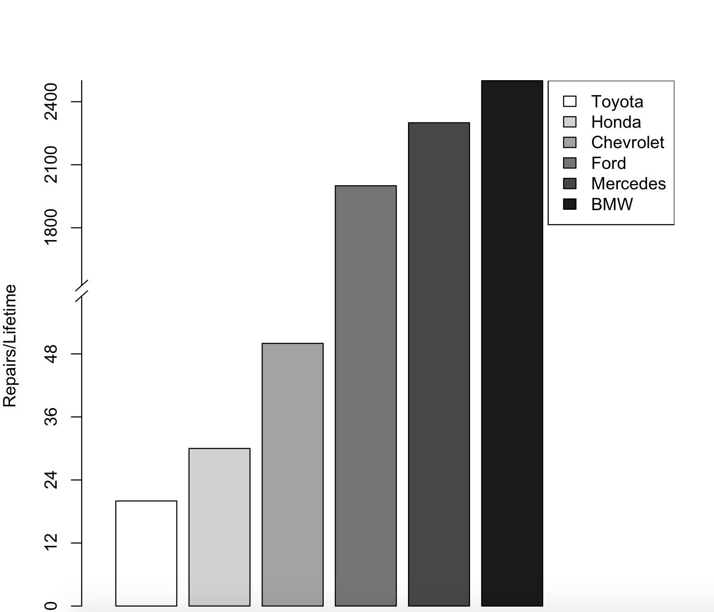

How to Make a Discontinuous Axis in R
Without Getting Tripped Up on "Ethics"
Recently, a fellow researcher asked me how to build a bar graph with a discontinuous y-axis.
Honestly, I've never made one, so I jumped at the idea of learning. I looked first for tutorials in Excel. This led to page after page
of obtuse ramblings about dummy axes, and bending Excel to your will in order to break its very strong convictions concerning continuous plots.
There was also the added problem that the Excel methods all inserted this triangular, bird-beak symbol when I very much wanted a nice double
slash across the axis.
While I'm on the subject, who is Excel really built for? It certainly isn't researchers, and I know even accountants find it unwieldy. Personally,
I think it's just a movie prop whose creator got carried away, and decided to just release it as actual software. You know, like those fake
newspapers that actors use. Intended entirely for two-dimensional background characters who just do business at the office
such as important reports about things like synergy.
Ranting aside, I did find a few nuggets of information in the realm of R. I won't start ranting about R, because the more I think about R (and
the choices the language makes), the more I get this weird urge to drink bleach and stick pointy metal things into electrical outlets.
Unfortunately, trying to find a concise tutorial on building a discontinuous axis was also impossible. I found the tools, but nothing I could
share with a novice R-user. I found plenty of ethical arguments about how it's misleading and how adding a gap to the plot is better,
but nobody really just answered the question. And in true StackExchange fashion, these non-answers just kept getting regurgitated every time
someone asked the question (usually punctuated with a "did you even search?", and a stroke of their neckbeard).
But I've seen these little discontinuous plots! I've seen them during countless presentations, nestled in their powerpoints. I've seen them in
legitimate journals. Once, I was robbed at an ATM by one (or so you would believe, trying to find advice on how to build one). So, since nobody
else wants to get their hands dirty, I will! I present to you...
Discontinous Plots in R
You'll need a wonderful little tool from the Plotrix package called axis.break. So let's get that out of the way first. In an R session, just:
install.packages("plotrix")
library(plotrix)
Of course, we need data. How about something near and dear to my heart? Imagine we have the following data. It might be slightly exaggerated because I'm bitter and slowly going broke due to my hobby of restoring a car that very much wants only eternal rest.
Car Manufacturer Repairs per Lifetime Toyota 20 Honda 30 Chevrolet 50 Ford 2000 Mercedes 2300 BMW 2500
So those values might be entirely made up, but in case you weren't paying attention, this tutorial isn't about ethics.
Now, obviously my first three data points (Toyota, Honda, and Chevy) would be completely dwarfed if I were to plot them on the same bar graph with
the last three. Just for giggles, give it a shot. We will make a vector of our data called repairs.
repairs<-c(20,30,50,2000,2300,2500) barplot(repairs)
Look at that hideous graph. Disgusting. We don't want the world to judge us (perhaps even pity us) because our car eats new parts like the old family VCR
used to devour tapes. No, we want to...massage the graph so that the difference between say..a Toyota and BMW...isn't so different. Or, officially,
we want to show the difference amongst the lower three and the upper three manufacturers more clearly, without resorting to two graphs when one should suffice.
This will require a new vector, and a little thinking on our part. I imagine those bottom three data points would look better if they were scaled something like
25x. Let's try that.
repairs<-c(500,750,1250,2000,2300,2500) barplot(repairs)
It certainly looks better, but that axis isn't correct for our lower three data points. How about we invoke the graph without an axis, and also shift the entire graph slightly left to leave some room for a legend (so we know which cars are which). That, of course, will require bars of different color, so let's take care of that, too. To start, make two character vectors. One for our color choices. The other for our manufacturer titles (in order).
colors<-c("grey100","grey82","grey64","grey46","grey28","grey10")
carnames<-c("Toyota","Honda","Chevrolet","Ford","Mercedes","BMW")
Next up, let's generate the shifted graph and make sure to turn off the automatic axis generation. Don't forget to use your colors!
barplot(repairs,axes=FALSE,col=colors,xlim=c(0,9),ylab="Repairs/Lifetime")
Personally, I think a nice break point in the axis would be at 1500. That's right in between our last of the smaller three values (Chevrolet), and the first of the larger three (Ford). So, let's build a new custom axis. Since our data goes to 2500, let's make the y-axis ticks in increments of 300 up to 3000, and then add a character vector of the actual y-axis values. This is done as so:
axis(2,at=c(0,300,600,900,1200,1800,2100,2400,2700,3000),
label=c("0","12","24","36","48","1800","2100","2400","2700","3000"))
Notice how I just left out 1500? That's where our break point will go, and this is where that plotrix package comes into play. Let's use the axis.break command to make a break at 1500 on our graph.
axis.break(2,1500,style="slash")
It's beautiful! Just needs the legend, which is easy enough since we left room for it and built our name and color vectors earlier.
legend("topright",legend=carnames,fill=colors)
Now you can just save with dev.copy, and share with the world your less apparent money pit.
dev.copy(svg,"kaching.svg") dev.off()
If all went well, you should have something that looks like this:
